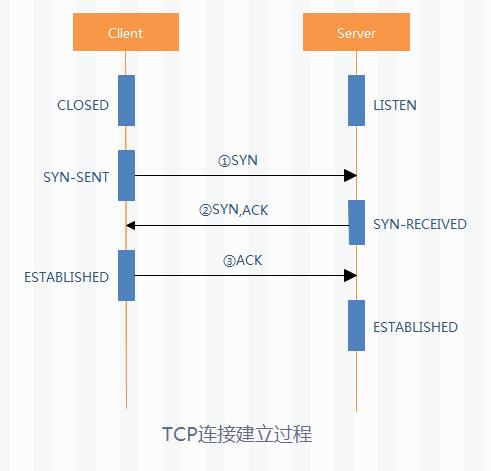
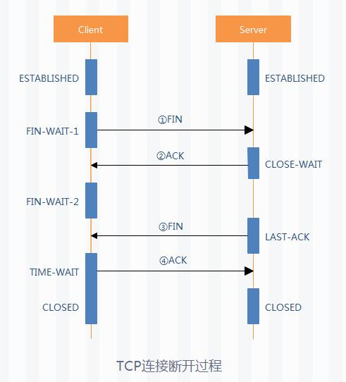

本文主要介绍传输层协议中的TCP协议的状态集合，已经连接和断开的过程。
定义
TCP（传输控制协议Transmission Control Protocol）是一种面向连接的、可靠的、基于8位字节流的传输层通信协议。
状态编码
| 名称 | 目标对象 | 说明 |
|---|---|---|
| LISTEN | S | 服务器等待从任意远程TCP端口的连接请求。监听状态。 |
| SYN-SENT | C | 客户端在发送连接请求后等待匹配的连接请求。通过connect()向服务器发出一个同步(SYNC)信号后进入此状态。 |
| SYN-RECEIVED | S | 服务器已经收到同步(SYNC)信号，同时向客户端发送同步(SYNC)信号后，等待客户端的确认(ACK)请求。 |
| ESTABLISHED | S&C | 服务器与客户端连接建立，可以开始发送数据。此时连接两端是平等的，属于全双工。 |
| FIN-WAIT-1 | S&C | （服务器或客户端）主动关闭端调用close()，发出FIN请求包，表示本方的数据发送全部结束，等待TCP连接另一端的ACK确认包或FIN&ACK请求包。 |
| FIN-WAIT-2 | S&C | 主动关闭端在FIN-WAIT-1状态下收到ACK确认包，进入等待远程TCP的连接终止请求的半关闭状态。此时可以接收数据，但不再发送数据。 |
| CLOSE-WAIT | S&C | 被动关闭端接到FIN后，发出ACK以回应FIN请求，并进入等待本地用户的连接终止请求的半关闭状态。此时可以发送数据，但不再接收数据。 |
| CLOSING | S&C | 已发出FIN请求，又收到对方发来的FIN后，进入等待对方对己方的连接终止（FIN）的确认(ACK)的状态。少见。 |
| LAST-ACK | S&C | 被动关闭端全部数据发送完成后，向主动关闭端发送FIN，进入等待确认包的状态。 |
| TIME-WAIT | S/C | 主动关闭端接收到FIN后，发送ACK包，等待足够时间以确保被动关闭端收到了终止请求的确认包。（一个连接可以在TIME-WAIT状态下维持最大四分钟，即最大分段寿命的2倍） |
| CLOSED | S&C | 完全没有连接。 |
连接过程（三次握手）

断开过程（四次挥手）

TCP参数介绍
Linux(version 2.6.32-358.el6.x86_64)下的TCP/IP内核参数表（/etc/sysctl.conf）：
注：参数默认值和Linux内核版本有关，不同版本的默认值可能不同。优化值只是一项参考，建议根据操作系统版本和自身服务器性能定制，在未充分了解参数作用的情况下，切忌不要任性地调整这些参数，否则可能造成严重的后果。
需要注意一下，Linux version 2.6.32下的参数，mem_max要小于mem_default，是该版本的一个bug。
| 参数 | 描述 | 默认值 | 优化值 |
|---|---|---|---|
| net.core.rmem_default | 默认TCP数据接收窗口大小(Bytes) | 229376 | 256960 |
| net.core.rmem_max | 最大TCP数据接口窗口大小(Bytes) | 131071 | 513920 |
| net.core.wmem_default | 默认TCP数据发送窗口大小(Bytes) | 229376 | 256960 |
| net.core.rmem_max | 最大TCP数据发送窗口大小(Bytes) | 131071 | 513920 |
| net.core.netdev_max_backlog | 在每个网络接口接收数据包的速率比内核处理这些包的速率快时，允许送到队列的数据包的最大数量 | 1000 | 2000 |
| net.core.sommaxconn | 定义了系统中每个端口最大的监听队列的长度，为全局参数 | 128 | 2048 |
| net.core.optmem_max | 每个套接字所允许的最大缓冲区大小 | 20480 | 81920 |
| net.ipv4.tcp_mem | 确定TCP栈应该如何反映内存使用，每个值的单位都是内存页（通常是4KB）。第一个值是内存使用下限；第二个值是内存压力模式开始对缓冲区使用应用压力的上限；第三个值是内存使用上限。在这个层次上可以将报文丢弃，从而减少对内存的使用。 | 94011 125351 188022 | 131072 262144 524288 |
| net.ipv4.tcp_rmem | 为自动调优定义socket使用的内存。第一个值是为socket接收缓冲区分配的最少字节数；第二个值是默认值（该值会被rmem_default覆盖），缓冲区在系统负载不重的情况下可以增长到这个值；第三个值是接收缓冲区空间的最大字节数（该值会被rmem_max覆盖） | 4096 87380 4011232 | 8760 256960 4088000 |
| net.ipv4.tcp_wmem | 为自动调优定义socket使用的内存。第一个值是为socket发送缓冲区分配的最少字节数；第二个值是默认值（该值会被wmem_default覆盖），缓冲区在系统负载不重的情况下可以增长到这个值；第三个值是发送缓冲区空间的最大字节数（该值会被wmem_max覆盖） | 4096 87380 4011232 | 8760 256960 4088000 |
| net.ipv4.tcp_keepalive_time | TCP发送keepalive探测消息的间隔时间(秒)，用于确认TCP连接是否有效。 | 7200 | 1800 |
| net.ipv4.tcp_keepalive_intvl | 探测消息未获得响应时，重发该消息的间隔时间(秒)。 | 75 | 30 |
| net.ipv4.tcp_keepalive_probes | 在认定TCP连接失效之前，最多发送多少个keepalive探测消息。 | 9 | 3 |
| net.ipv4.tcp_sack | 启用有选择的应答(1表示启用)，通过有选择地应答乱序接收到的报文来提高性能，让发送者只发送丢失的报文段，（对于广域网通信来说）这个选项应该启用，但是会增加对CPU的占用。 | 1 | 1 |
| net.ipv4.tcp_fack | 启用转发应答，可以进行有选择应答（SACK）从而减少拥塞情况的发生，这个选项也应该启用 | 1 | 1 |
| net.ipv4.tcp_timestamps | TCP时间戳（会在TCP包头增加12个字节），以一种比重发超时更精确的方法来启用对RTT的计算，为实现更好的性能应该启用该选项。 | 1 | 1 |
| net.ipv4.tcp_window_scaling | 启用RFC 1323定义的window scaling，要支持超过64KB的TCP窗口，必须启用该值，TCP连接双方都启用时才生效 | 1 | 1 |
| net.ipv4.tcp_syncookies | 表示是否打开TCP同步标签（syncookie），内核必须打开了CONFIG_SYN_COOKIES项进行编译，同步标签可以防止一个套接字在有过多试图连接到达时引起过载 | 1 | 1 |
| net.ipv4.tcp_tw_reuse | 表示是否允许将处于TIME-WAIT状态的socket（TIME-WAIT的端口）用于新的TCP连接 | 0 | 1 |
| net.ipv4.tcp_tw_recycle | 能够更快地回收TIME-WAIT套接字 | 0 | 1 |
| net.ipv4.tcp_fin_timeout | 对于本端断开的socket连接，TCP保持在FIN-WAIT-2状态的时间(秒)。对方可能会断开连接或一直不结束连接或不可预料的进程死亡。 | 60 | 30 |
| net.ipv4.ip_local_port_range | 表示TCP/UDP协议允许使用的本地端口号 | 32768 61000 | 1024 65000 |
| net.ipv4.tcp_max_syn_backlog | 对于还未获得对方确认的连接请求，可保存在队列中的最大数目。如果服务器经常出现过载，可以尝试增加这个值。 | 2048 | 2048 |
| net.ipv4.tcp_low_latency | 允许TCP/IP栈适应在高吞吐量情况下低延时的情况，这个选项应该禁用。 | 0 | |
| net.ipv4.tcp_westwood | 启用发送者端的拥塞控制算法，它可以维护对吞吐量的评估，并试图对带宽的整体利用情况进行优化，对于WAN通信来说应该启用这个选项。 | 0 | |
| net.ipv4.tcp_bic | 快速长距离网络启用Binary Increase Congestion，这样可以更好地利用以GB速度进行操作的链接，对于WAN通信应该启用这个选项。 | 1 |